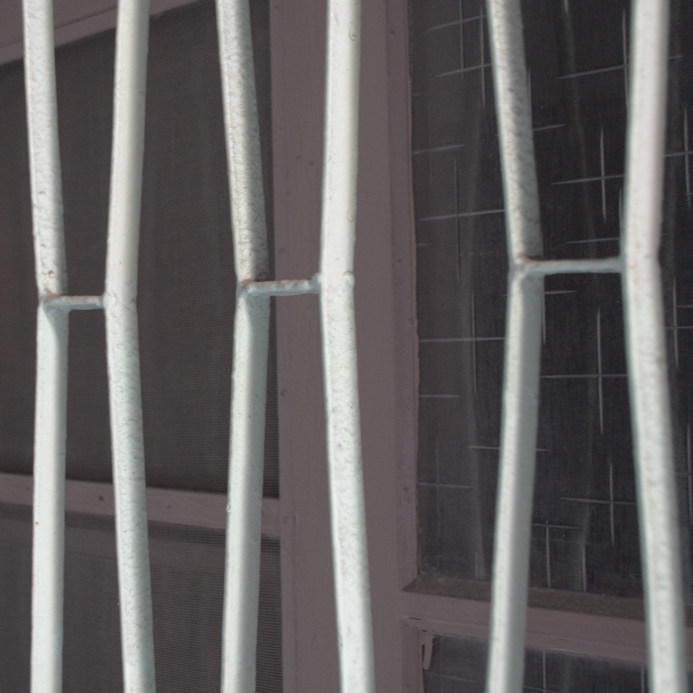

1-1發展脈絡
鐵花窗，日治時期的鐵窗，在日本俗稱面格子，在台灣稱作鐵花窗或者花窗。簡言之都是指佇立在樓房老屋的窗物外部，兼具防盜及建築裝飾性功能的鐵窗。他在台灣的留存與消逝的痕跡可以看出當代庶民生活美學與工藝展現與整個時代流變與產業變遷，台灣又是一個在歷史中被多個國家統治過的所在，所以曾激盪出反映在鐵花窗的的多元文化更有趣值得探究，即使現實中這個文化逐漸消失是事實，但也因為她獨特的美，有人正為這個工藝默默且永續地保存。
日治前期的發展轉折
從兩千多年前進入金屬器時代的台灣，是有鐵器出土的證據，所以研究確定先民早在當時便以熟知製作鐵器。然而清領時期因械鬥民變的猖狂，朝廷為了安全上的顧慮而限制鐵工業的發展。
鐵花窗開始盛行是從日治時期，因為台灣當時被日本定位為「南進基地」的實驗所，設立許許多多小型機械工廠製造農械與五金材料，之後轉型為鐵工所，故台灣得到非常非常多日本移入的金屬等各種原料與純熟的鐵工技術。當時由於官方的政策導致鐵工的發展，所以鐵花窗大多建構在公共設施或是官方建築，或這使少數紳士階層的富商，而非民間。採西方藝術風格的樣式。
日治後期的發展普及
1930年代日本對台推行市區改正計畫[註]，與強震的災後重建皆促使了民間的街屋納入建築二樓出挑的小陽台欄杆，與鐵花窗有相似的紋樣，開始有簡單幾何的造型，呈現二方連續居多，後來漸漸使得鐵工技術表現於建築立面這件事普及於1940年代在日本統治下的台灣，也在當時達到最高峰，故現在探訪老屋窗上圖案極容易找到與日本文化連結的痕跡，就是因為日本大量移入其文化於對台灣的統治、設計、教育，雖然說日本也曾嚴重西化，但日式紋樣還是最普遍，這些樣式除了反映當時文化渲染，也有表徵店家與產權的標記類造型，例如商行等等地標誌。
光復後的發展沒落
五、六零年代的光復後台灣正在經歷著經濟發展快速成長的時代，所以從那時候便養成了對社會環境要求「省力、省時、省工」的最大利益， 鐵花窗就是在這個要求的原則下開始被淘汰的，因為她製作過程非常費工，也很吃人力，師傅一天只要用不到一百塊的工資收徒弟的鐵工領域在大時代下顯得勞力傷財，加上易生鏽的特性，使得鋁門窗趁機為重建商寵愛，花紋從繁化簡，甚至稱不上花紋了，僅是單調的直線，而這個問題即使在這個當下依然存在著。平房變為公寓大廈，基本的住民生活要求轉為土地建商對開發的狂熱，鐵花窗慢慢失去她的功能性，雖說能取代鐵花窗防盜地功能的代替品舉凡皆是，成本也相對低廉與容易維護，不過對於這份工藝美學及紋樣價值，好像就少了一份交代，或許一種是讓你玩味老屋的方式，或是在生活中時時刻刻培養美學的功能，都慢慢沒落了，這是很可惜的部分。
在信義街發現被拆除的鐵花窗，應是被視為廢鐵橫擺在旁。
1-2構成組合
基本觀察項目包括組成元素、工藝技法與紋樣類別與排列方式，此幾乎得構成鐵花窗的組合。
組成元素
=扁鐵+節點+渦形+平面圖樣。

工藝技法
轉折/於鐵縱橫交錯之接近節點處反覆扭轉的工法
鉚接/於兩扁鐵轉折將交處固定的工法
焊接/將曲線與船直扁鐵連結的工法
台灣有別於西方鐵花窗對彎曲的鐵條以延伸及環繞的方式構成。